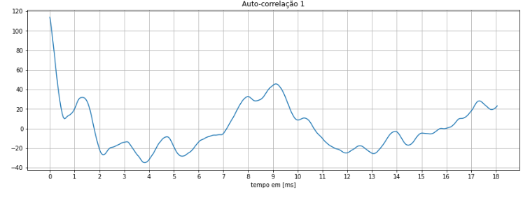

Atividade 5
Características Tempo e Frequência da Voz
Utilizando os microfone capacitivo Behinger e um microfone dinâmico Shure, realizamos a gravação de áudio dos integrantes presentes onde se disponibilizam da seguinte forma:
I. Nome completo:
Beatriz Cavalcante Silva
Microfone capacitivo Behinger
Microfone dinâmico Shure
Vitor Camilo Vera
Microfone capacitivo Behinger
Microfone dinâmico Shure
Caleb Ribeiro Leite
Microfone capacitivo Behinger
Microfone dinâmico Shure
II. RA:
RA 11046815
Microfone capacitivo Behinger
Microfone dinâmico Shure
RA 11201720090
Microfone capacitivo Behinger
Microfone dinâmico Shure
RA 11111215
Microfone capacitivo Behinger
Microfone dinâmico Shure
III. Frase: “ENTRE POR ESTA PORTA AGORA E DIGA QUE ME ADORA”
Beatriz
Microfone capacitivo Behinger:
Microfone dinâmico Shure:
Forma de onda:
Espectrograma:
Vitor
Microfone capacitivo Behinger:
Microfone dinâmico Shure:
Espectrograma:
Caleb
Microfone capacitivo Behinger:
Microfone dinâmico Shure:
Espectrograma:
Espectrograma de Adriana Calcanhoto:
Comparativo:
IV. O trecho do VERSO 1 da Lírica de Camões
Beatriz
Microfone capacitivo Behinger
Microfone dinâmico Shure
Victor
Microfone capacitivo Behinger
Microfone dinâmico Shure
Caleb
Microfone capacitivo Behinger
Microfone dinâmico Shure
Forma de onda:
Espectrograma:
V. Música
Fonema Ca de (Voz do Caleb): Consoante Surda Plosiva

Pitch Caleb: 1,51 ms
Frequência Fundamental Caleb: 662 Hz
Fonema Be de (Voz Beatriz): Consoante Sonora

Fonema Si de (Voz Beatriz): Consoante Surda

Forma de onda:
Espectrograma:
Prosódia
A prosódia define e reune as características da emissão dos sons ao falar, como acento, entonação de voz e tonalidade, até mesmo timbre do indivíduo.
como o acento e a entoação Qual a
diferença entre voz falada normal, em verso, ou em música neste conceito?
Eletroglotograma
Não foi possível realizar o eletrograma devido tempo disponível para a realização do laboratório, bem como materiais.